SovereignWinter, while returning from an expedition, took note of a small sample of neutron stars to assess if there was a correlation that could be found between jet radius, jet cone half-angle, and rotational period. As shown in this document, it was found there is a clear correlation between these variables. Due to the limited sample set it is highly recommended that more data be collected prior to defining equations that can be used to identify locations where planets can be found orbiting within the jet cones of neutron stars .
Data for the three variables were collected using three different techniques. The simplest piece of data to collect was the rotational period, available in the journal following a Full Spectrum System (FSS) Scanner “honk” to capture the stellar parameters. As such, this is the most accurate piece of data and the only one that can be collected using journal reader tools.
The next two pieces of data were more subjective and subject to moderate error. The Cone Half-Angle of the jet was captured by stationing the ship roughly perpendicular to the axis of rotation and pointing the ship towards the neutron star. A series of screenshots were captured and two were selected that showed the jet at each of its rotational extents. The two screenshots were overlaid and one made partially transparent. Next, lines were drawn, crossing at the neutron star center, and the angles made from the vertical for these two lines were calculated and averaged to help reduce error due to ship placement.
The final piece of data, and arguably the least accurate, is the jet radius. To collect this, the neutron star was targeted and the commander attempted to pilot the ship perpendicular to the axis of rotation, making passes further and further away until the ship no longer experienced the wake turbulence of passing through the jet cone and noting the distance. It was observed that the visual jet cone does not extend as far as the wake turbulence, suggesting that even as the jet diffuses at distance it is still potent. Since this measurement was read out on the HUD while attempting to pilot the ship and assess when the ship would be flying through the jet axis, this is arguably the least accurate piece of data captured in this study.
Data was collected from 15 random neutron stars along the commander’s flight path. Of these neutron stars, most were single star systems or systems with far binaries but one neutron star had a close binary that caused it to have a very fast rotational period. This data point should not be excluded given that it is known that neutron stars spin faster when orbiting close to a partner. That said, there is a larger potential for error on this side of the data set as it has not been populated enough to average out yet. The results should be considered speculative but anchored. Another data outlier was a lone neutron star that had very little spin and a rotational period over three times longer than any other in the dataset. List the fast spinner, the results here should be considered speculative but anchored. The following is the collected data set:
| Data Source | Visual Estimate | Piloting | Journal |
| System Name | Cone Half-Angle [deg] | Jet Radius [Ls] | Rotational Period [s] |
| Lasou RN-J d9-2398 | 9.5 | 1.66 | 1.523022 |
| Lasou IB-N d7-3707 | 37.5 | 14.7 | 0.002479 |
| Lasou DV-O d6-7244 | 14 | 2.58 | 0.858639 |
| Lasou UI-S d4-3276 | 11.5 | 2.09 | 1.348666 |
| Lasou MW-V d2-4023 | 12 | 3.09 | 1.05973 |
| Lasou CK-Z d4069 | 7.5 | 0.99 | 3.436775 |
| Lyaisae WK-E d12-4608 | 10.5 | 2.31 | 1.353461 |
| Lyaisae OY-H d10-6505 | 13 | 2.94 | 1.092839 |
| Lyaisae DB-N d7-6045 | 10 | 1.94 | 1.698526 |
| Lyaisae KH-V e2-6242 | 15.5 | 3.32 | 0.803819 |
| Lyaisae PN-S d4-2025 | 7 | 1.05 | 4.064584 |
| Lyaisae PN-S d4-4077 | 10 | 2.30 | 1.522108 |
| Lyaisae BV-Y e4374 | 9.5 | 1.92 | 1.894741 |
| Lyaisae RN-B d1976 | 5.5 | 0.49 | 14.646758 |
| Eorl Broae SK-E d12-1833 | 10 | 2.13 | 1.5993 |
The images used to capture the cone half-angle have been collected below.
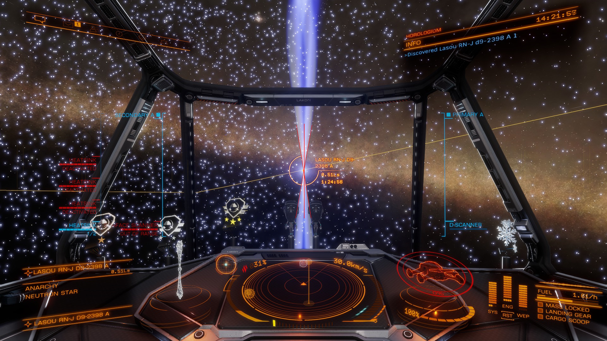
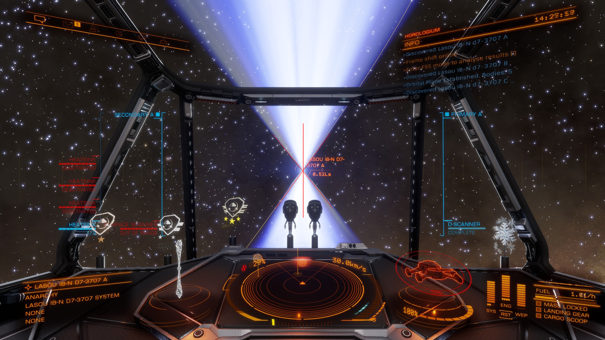
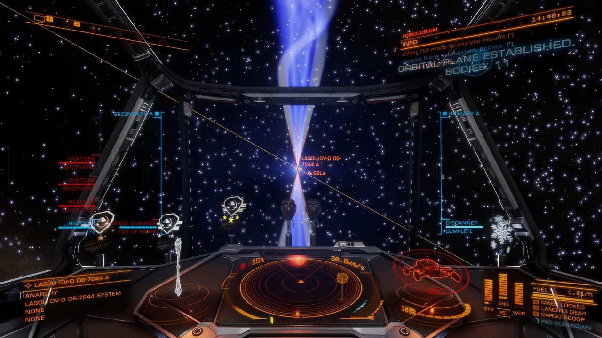
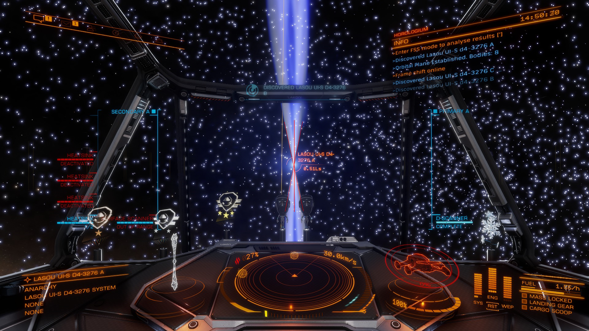
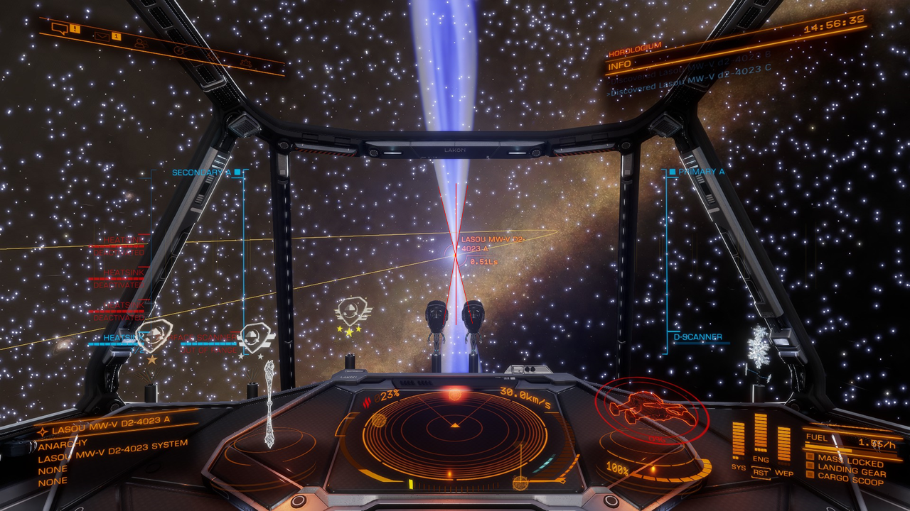
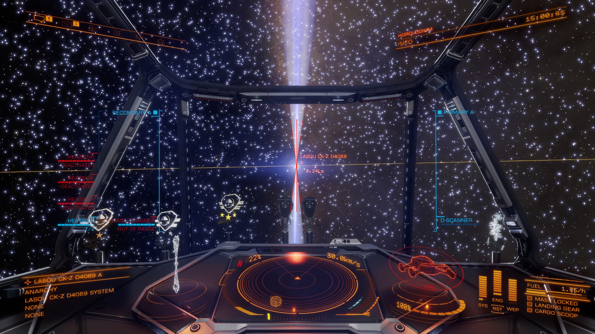
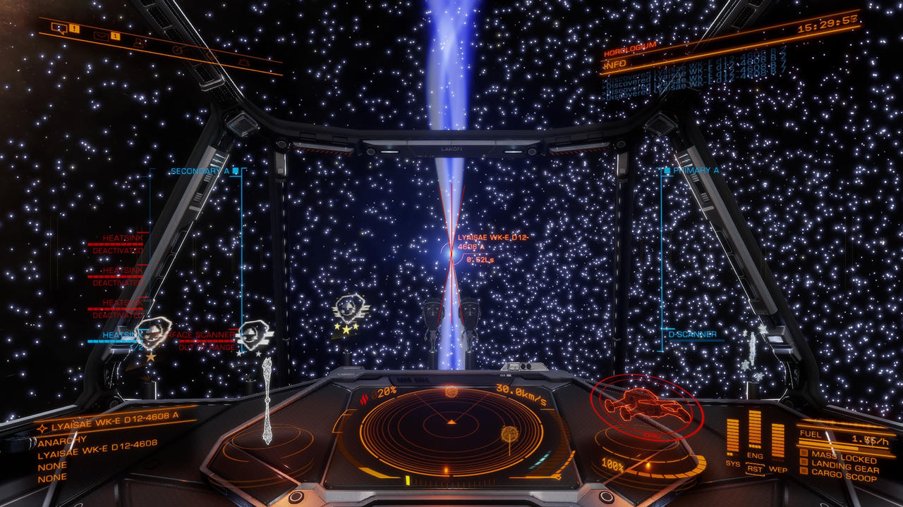
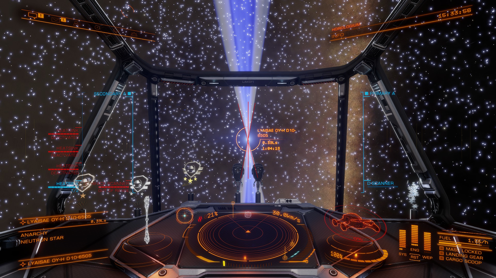
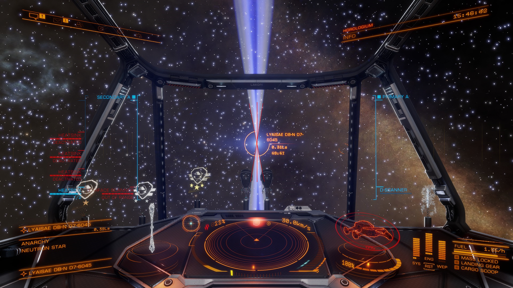
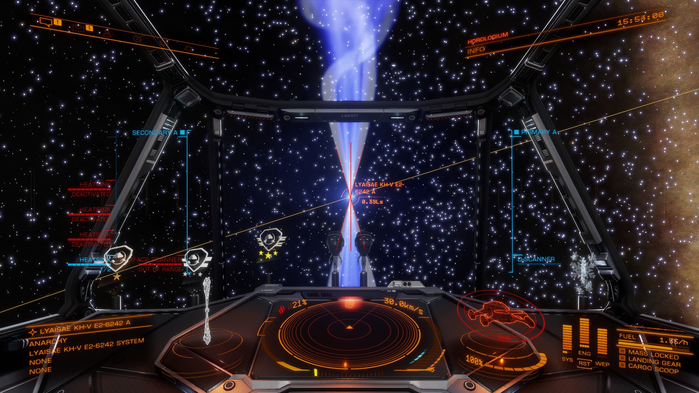
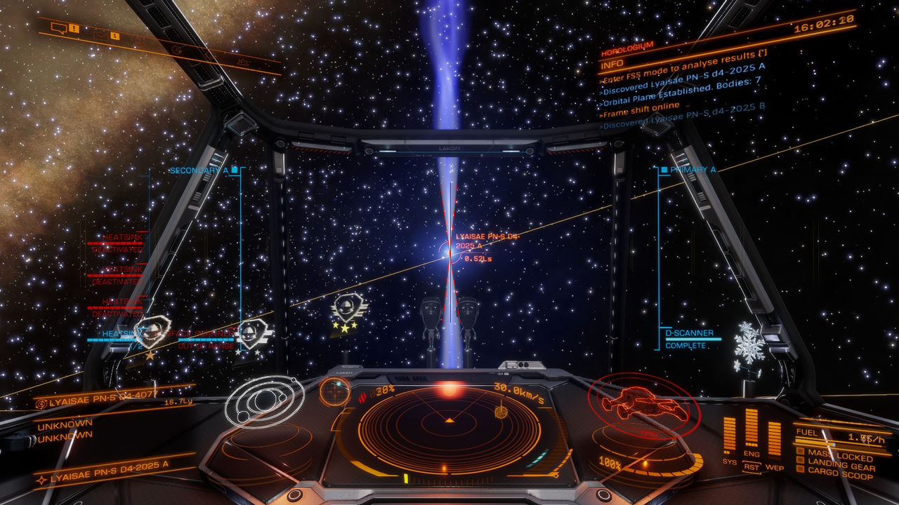
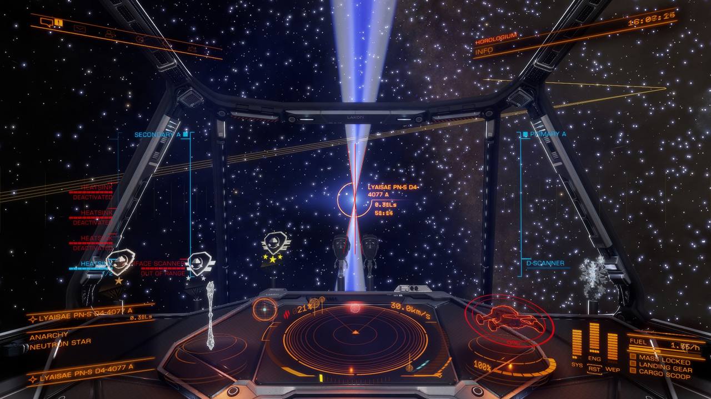
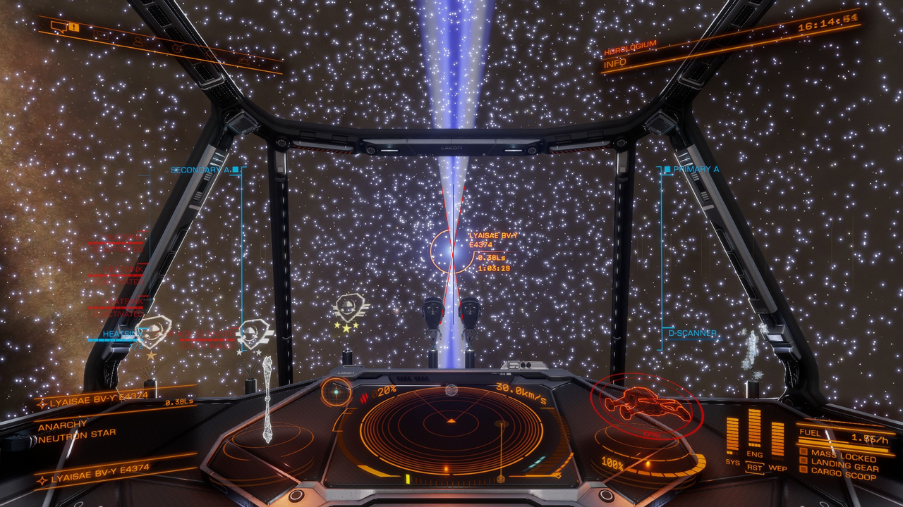
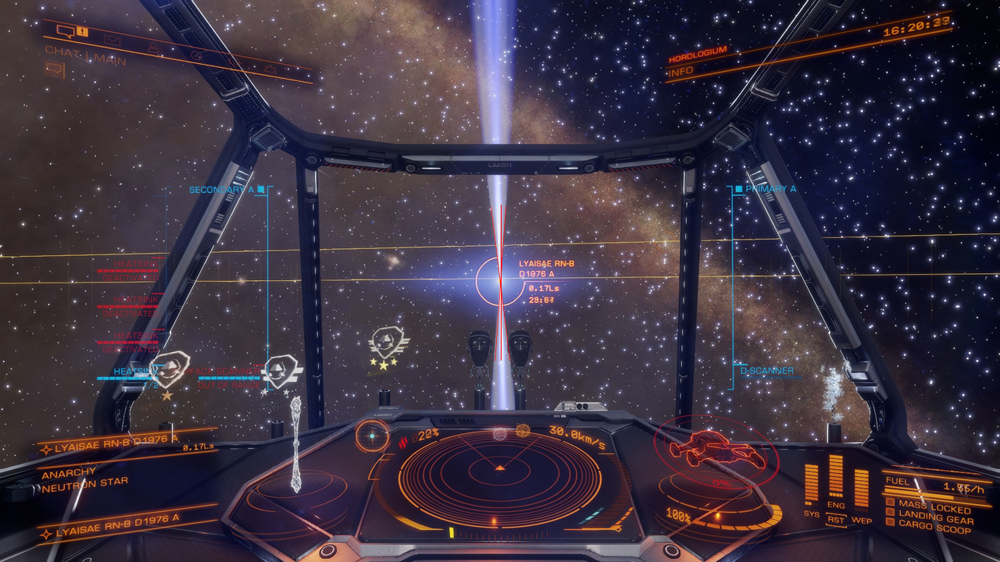
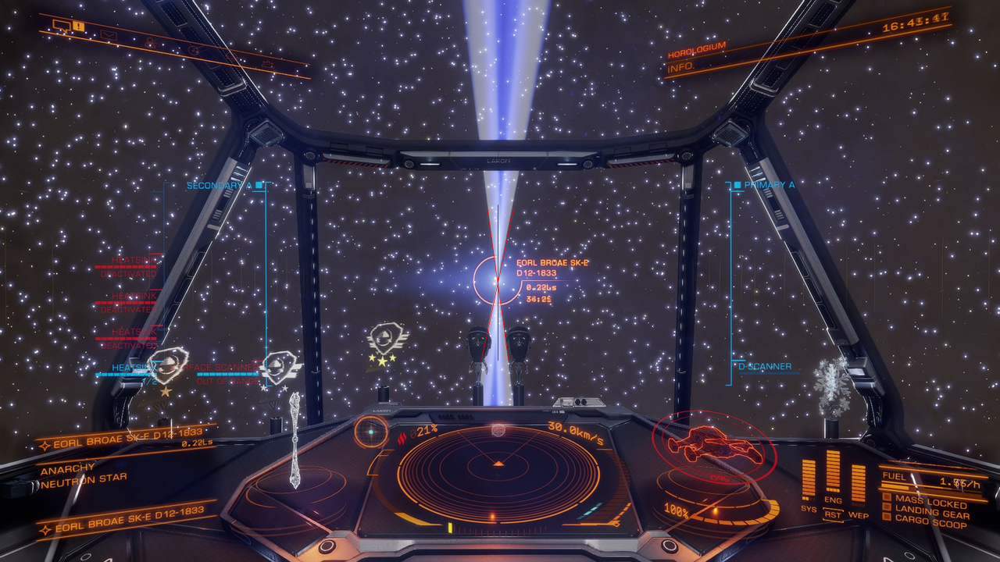
From this data set it can be concluded that there is a correlation between rotational period, jet radius, and jet cone half-angle. As previously stated there were two outliers in the dataset. Both are expected as very fast and very slow spinning neutron stars have been observed but, based on this sample set, are rarer finds so more data is needed. From the data set, an admittedly random but small sample, it appears most neutron stars have spins between 1 and 2 seconds which correspond to a moderate half-cone angle of about 10 degrees and jet cones about 2 light-seconds (Ls) long when measured from the center.
There is a strong correlation between the rotational period and the jet cone half-angle. This correlation appears to be logarithmic or power law in nature. For the given dataset, power law was a better fit and this is shown below. Charts showing with and without outliers are presented.
There is also a strong correlation between the rotational period and the jet radius. This correlation also appears to be logarithmic or power law in nature. For the given dataset, power law was a better fit and this is shown below. Charts showing with and without outliers are presented.
Finally, given the combined correlations between rotational period, jet radius, and jet cone half-angle, it was determined there is also a correlation between the jet cone half-angle and the jet radius. This relationship was found to be more polynomial in nature with the best-fit polynomial being a second-order equation with the y-intercept being set to 0 radius at 0 half-angle. Charts showing with and without outliers are presented.
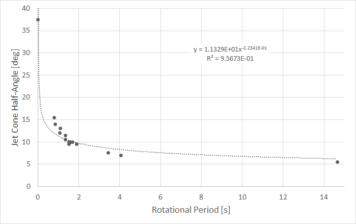
Figure 1: Jet Cone Half-Angle vs Rotational Period [All Data]
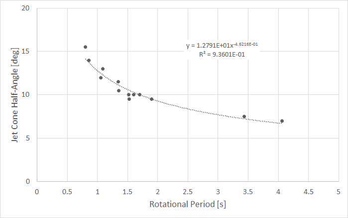
Figure 2: Jet Cone Half-Angle vs Rotational Period [No Outliers]
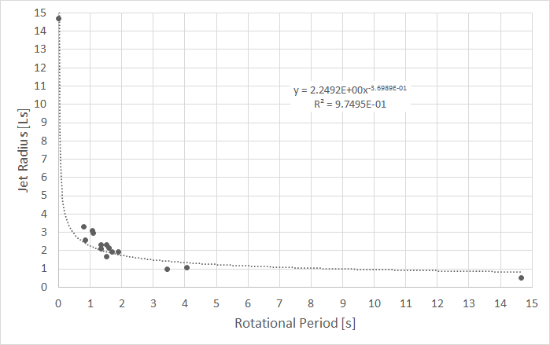
Figure 3: Jet Radius vs Rotational Period [All Data]
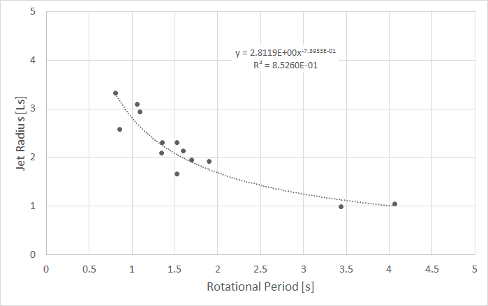
Figure 4: Jet Radius vs Rotational Period [No Outliers]
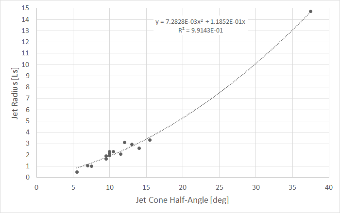
Figure 5: Jet Radius vs Jet Cone Half-Angle [No Outliers]
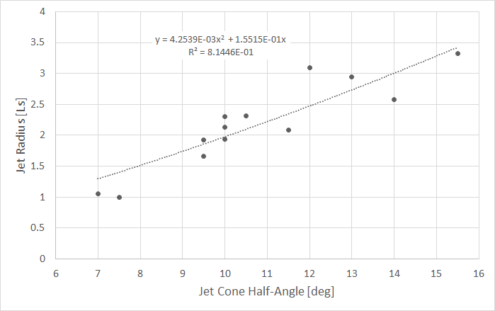
Figure 6: Jet Radius vs Jet Cone Half-Angle [No Outliers]
In conclusion, there is a strong correlation between the rotational period of a neutron star (obtainable from the journal) and the neutron star’s jet cone radius and half-angle. It has been observed that the lower the rotational period (the faster a neutron star spins) the larger the cone half-angle and the larger the jet radius. It has also been noted that the neutron star’s jet cone extends past where it is visually observed to end. As such, even towards the ends of the jets, pilots must take care when flying along the neutron star’s axis of rotation. While these correlations appear sound, due to the limited data set it is recommended that more data be collected before a final definitive statement is made.